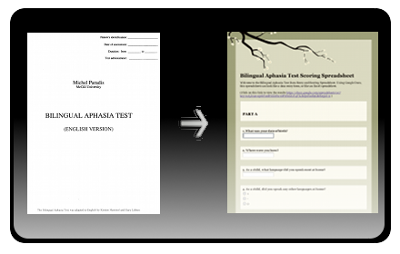
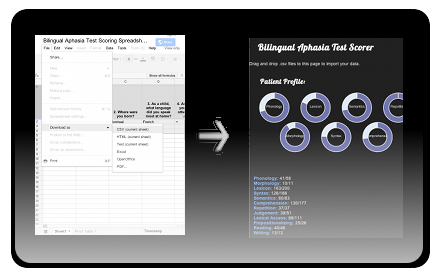

Welcome.
Twenty years ago we had two applications to score the BAT (Bilingual Aphasia Test), the PCBAT and the MacBAT, neither of which run anymore. At the Academy of Aphasia annual meeting in October 2011 members of the Bilingual Aphasia Test community got together, and decided to make a HTML5 BAT scorer, that will run on any computer, on any mobile device, anywhere.
Installation
- You can use the WebApp offline, install it if you have Chrome
- You can use the WebApp online, here
Step 1: the spreadsheet
Step 2: import the spreadsheets
Authors and Contributors
The BAT scorer is Open Source and Free!
- Gina Cook - iLanguage Lab, Montréal Canada
- Émie Dessureault - École de Orthophonie et Audiologie, Université de Montréal
- Catherine Gervais - Département de Psychologie, Université de Montréal
- Alexandra Marquis - École de Orthophonie et Audiologie, Université de Montréal
- Kim Dan Nguyen - École de Orthophonie et Audiologie, Université de Montréal
- Join us, we need you!
Support or Contact
Having trouble with the BAT scorer? The BAT scorer is written in HTML5, some browsers don't support it yet but they will in the next year or two. The best browser for HTML5 is Chrome. Check out the video at or contact us and we’ll help you sort it out.